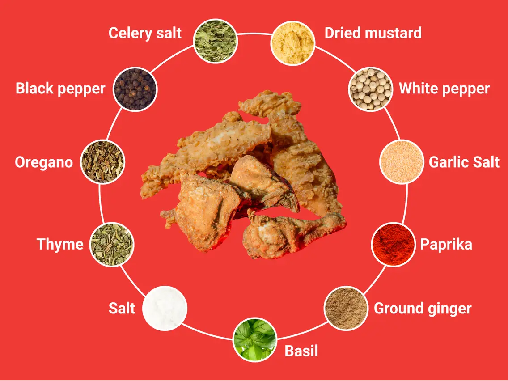

Exploring the Secret Recipe
KFC's secret recipe is one of the most closely guarded secrets in the culinary world. Many have tried to replicate it, but the unique blend of herbs and spices remains exclusive to KFC. The journey of discovering the secret behind the mouth-watering taste of KFC's fried chicken is an intriguing one.
Colonel Sanders, the founder of KFC, developed the original recipe in the 1940s, and it has since become synonymous with the brand. The exact combination of ingredients is known to only a select few, and the spice blend is shipped to KFC locations ready for use. Whether you prefer the classic Original Recipe or the zesty Hot and Spicy, each bite is a journey of savory goodness. The Colonel's vision of serving quality chicken remains true, making KFC a global icon in the world of fast food.
Next time you savor the crispy and flavorful KFC chicken, remember that you're enjoying a piece of culinary history that has captivated taste buds for decades. Served hot and fresh, KFC's Original Recipe Chicken is more than a meal; it's a culinary experience. Whether enjoyed as a family feast or a personal indulgence, this crispy delight brings people together, creating moments of joy and shared happiness. As you savor the rich flavors and satisfying crunch, you become part of a legacy that spans generations.In a world of fast food, KFC's Original Recipe Chicken remains a timeless classic, an epitome of quality, and a symbol of the Colonel's commitment to delivering unmatched taste. It's not just chicken; it's an institution, and each piece tells a story of passion, craftsmanship, and culinary